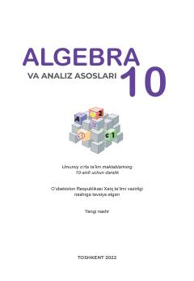

AV10-sinf o'quvchilari uchun algebra va analiz asoslari bo'yicha rasmiy darslik.
Ushbu darslik O'zbekiston Respublikasi umumiy o'rta ta'lim maktablarining 10-sinf o'quvchilari uchun mo'ljallangan. Kitobda kvadrat funksiyalar, ratsional va irratsional tenglamalar, ko'rsatkichli va logarifmik funksiyalar hamda ehtimollar nazariyasi asoslari yoritilgan.